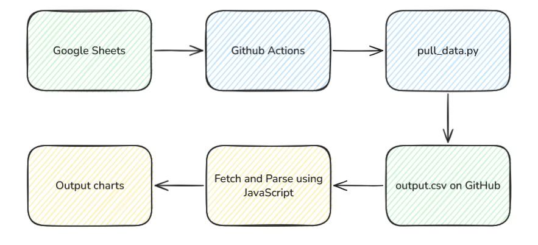

How I Made the Gym Analytics Dashboard
Published 2026
I track every workout in a Google Sheet, one row per set: date, day type, exercise, set number, weight, reps, volume. After a couple years of logging, the sheet had grown into something genuinely interesting. There were patterns in there I couldn't see by scrolling. So I built a dashboard. Not a notebook, not a one-off chart in Excel, a live page on my portfolio that pulls the latest data every day and renders it with no third-party chart libraries. Here's how it works.
Simple Overview
The whole stack has three moving parts: the Google Sheet I log into on my phone, a scheduled GitHub Action that snapshots the sheet to a CSV, and a static page that fetches that CSV and draws the charts.

The Data Source
Everything starts with a Google Sheet. I log workouts on my phone between sets, which means the source of truth has to be something I'll actually keep updated. Sheets won that fight by default.
Each row is a single set. The columns the dashboard reads are:
Date, when the set happened (M/D/YYYY)Day, Push, Pull, or LegExercises, exercise nameSet #, which set within the workoutWeight, load, or"Body Weight"for bodyweight movements# of Reps, reps performedVolume, weight × reps
It's messy in the way any spreadsheet that's been edited by a human for years is messy, broken formula leaks, inconsistent group names, occasional typos. The frontend handles all of that.
The Pipeline
The pipeline lives in a separate repo: Streetlight321/pull_gym_data. It's small on purpose, a Python script and a workflow YAML.
-
1
Authenticate with
gspreadusing a Google service account. The service account JSON and the sheet ID live in GitHub repo secrets; I shared the sheet with the service account's email as a viewer. -
2
Pull all values from the first tab and dump them straight to
output.csv. The script is roughly 20 lines. -
3
Schedule the workflow with cron,
0 5 * * *, midnight Eastern.workflow_dispatchis enabled too so I can trigger it manually. -
4
Commit the updated CSV back to the repo, but only if it actually changed. The trick is
git diff --cached --quiet || git commit, no empty "nothing changed today" commits on rest weeks.
The Frontend
The dashboard is vanilla HTML, CSS, and JavaScript. No React, no Chart.js, no D3. On page load it does a single fetch against the raw CSV URL with cache: 'no-store' so I always see the latest pull.
A few pieces worth calling out:
- Hand-rolled CSV parser. RFC 4180-compliant, walks the line character by character tracking quote state. I wrote it because some of my notes have commas in them and I didn't want to pull in a library for one function.
- Cleaning pass. Normalizes dates from
M/D/YYYY, strips#VALUE!errors, handles"Body Weight"as a weight, normalizes"Legs"to"Leg". All the spreadsheet quirks live in one place. - SVG charts from scratch. Every line, dot, and tooltip is generated by a small
svg()helper. Zero dependencies, instant page load. - Animated entrance. Each polyline's actual path length is measured in JS and written to a
--dashCSS variable per chart, so a short line and a long line both draw in at the same rate. - Date-range filter. A 30d / 90d / All-time toggle re-renders the main chart on click. Hero stats stay on lifetime totals, those don't move with the filter.
The payoff for skipping a chart library: when I wanted to do something weird, like animate the line drawing itself in by stroking along a calculated path length, I could just do it. No fighting an abstraction.
What I Learned
The most expensive part of building this was deciding I didn't need a backend. Once that was settled, every other piece fell into place: Sheets for input, Actions as the cron, raw CSV as the API, vanilla JS for the view.
A few things I'd do differently if I were starting over:
- The cleaning logic should live in the Python step, not the frontend. Right now the browser is doing schema work that should have happened upstream.
- An unauthenticated, uncached fetch is fine for one user but would fall over with real traffic. A CDN like Cloudflare in front of the raw URL would solve that for free.
- A "PRs over time" panel, the data's already there, I just haven't built the view yet.
But the bigger takeaway is that this whole pattern is reusable. If you've got data sitting in a spreadsheet that you'd like to see as a live dashboard, three moving parts will get you there: a service account, a cron'd Action, and a raw CSV fetch. That's it.
Final Thought
If you take anything from this build:
- Pick the constraint first, "no backend" decided everything else
- Let the cheapest tool win when it's good enough
- Hand-roll the small stuff; it's usually less code than the library
- Clean data upstream, render it downstream
- Ship it, then iterate
Three moving parts. That's the whole thing.